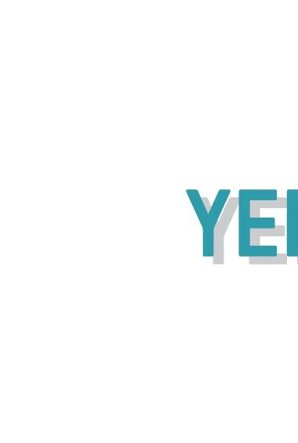
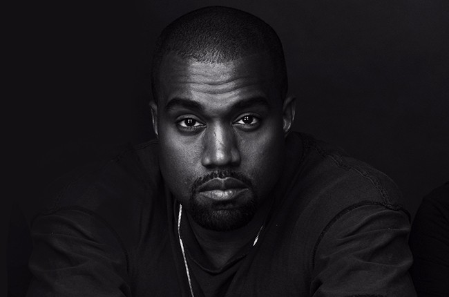

Yeezy
2015

The first brand to collaborate with West in the creation of Yeezy was A Bathing Ape, creating the Dropout Bear Bapesta in 2006. West then went on to collaborate with luxury brand Louis Vuitton in 2009, creating three different silhouettes named after notable people in his life. From the period of 2009 until 2013, Kanye collaborated with Nike to release two silhouettes (three sneaker styles) before parting ways over disagreements about royalties. Kanye turned to adidas, who agreed to provide royalties for new Yeezy styles and amalgamated in the introduction of the Yeezy Boost 750; becoming the ultimate sneaker hype in 2015.